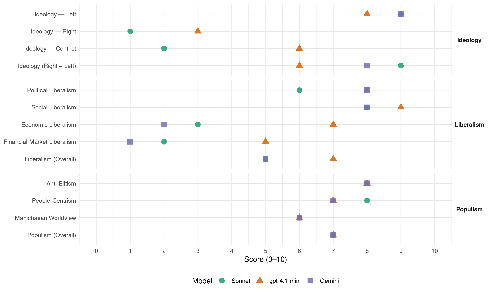

NDP (Canada, 1997)
manifesto_id 62320_199706
Get full text: This site shows derived annotations and short verbatim quotes only. The full manifesto text is © Manifesto Project / WZB — obtain it via manifesto-project.wzb.eu using the manifesto_id above.
Headline scores
| Dimension | Sonnet | gpt-4.1-mini | Gemini |
|---|---|---|---|
| Populism (Overall) | 7.0 | 7.0 | 7.0 |
| Anti-Elitism | 8.0 | 8.0 | 8.0 |
| People-Centrism | 8.0 | 7.0 | 7.0 |
| Manichaean Worldview | 6.0 | 6.0 | 6.0 |
| Ideology (Right − Left) | 9.0 | 6.0 | 8.0 |
| Liberalism (Overall) | 5.0 | 7.0 | 5.0 |
| Political Liberalism | 6.0 | 8.0 | 8.0 |
| Social Liberalism | 8.0 | 9.0 | 8.0 |
| Economic Liberalism | 3.0 | 7.0 | 2.0 |
| Financial-Market Liberalism | 2.0 | 5.0 | 1.0 |
Evidence per dimension
Economic Liberalism
Gemini · score 2.0 · verified · chunk 1
“excess profits tax for large financial institutions”
Alexa McDonough and Canada’s NDP will fight for an excess profits tax for large financial institutions.
gpt-4.1-mini · score 7.0 · verified · chunk 1
“We will close the loopholes and end the giveaways. End corporate tax deduction for any salary or other pay in excess of $200,000 a year”
Alexa McDonough and Canada’s NDP will fight for fair taxes for you, and an end to unfair tax breaks for profit-making corporations and the wealthy. WORKING FAMILIES pay their fair share of taxes. That makes it all the more infuriating that some wealthy people avoid taxes entirely. In 1994, the Liberal government’s first full year in office, 3,500 Canadians earning more than $100,000 a year didn’t pay a dime. That’s two times more than under Brian Mulroney. Alexa McDonough and Canada’s NDP will fight to end the special tax deals for corporations and the wealthy. Ordinary men and women and their families have paid more than their share for too long. Other parties have proposed tax changes that give the biggest break to the wealthiest. When you look at the details, they would make the tax system even more unfair. New Democrats will expose and fight such plans. There are only three major industrialized nations that do not tax large accumulations and transfers of wealth. Canada is one of them. Even the US taxes large transfers of wealth between generations. The accounting firm Peat Marwick estimates more than $1,000 billion will be transferred between generations in the next 20 years. If Canada imposed the same tax as the US, and limited it to transfers of more than $1,000,000, it would raise at least $4.5 billion a year to support services to people. In addition, the Chretien and Mulroney tax breaks for corporations are extremely generous by international standards, according to the International Monetary Fund. This is the reason why many corporations with large profits pay no taxes. The Liberal’s approach to deficit reduction is to let corporations and the rich keep their tax breaks while the rest of us pay more. The Reform Party has numerous proposals to give even more to the rich, at your expense. They want to eliminate the tax on capital gains, and cut taxes for the highest income Canadians. They will take from you by eliminating federal contributions to higher education and deeply cutting programs for people, including payments to the elderly. ONLY ALEXA MCDONOUGH AND CANADA’S NDP PROPOSE ALTERNATIVES THAT BENEFIT YOU: Ensure that everyone pays a fair share so we can continue to afford health care, education and other vital public services. We will close the loopholes and end the giveaways. End corporate tax deduction for any salary or other pay in excess of $200,000 a year, so company owners don’t receive indirect tax subsidies for handing out these inflated incomes. End the special tax exemption for corporate lobbying, so company owners and shareholders pay in full for trying to influence government to favour their private interest. Increase the GST tax credit for individuals by 30 percent. Make the income tax system more progressive by adding new tax brackets for individuals with incomes above $100,000 a year. Eliminate federal surtaxes on low-income taxpayers. Conduct a thorough review of the cost and benefit of corporate tax subsidies and eliminate all those with no net benefit to Canadians. Introduce a real minimum corporate income tax and other measures to bring corporate tax revenue up to the average for industrialized countries. Set withholding tax rates at the same levels as those countries with which we have tax treaties. Ensure that large banks and other profitable financial institutions pay their fair share of taxes. End special tax breaks for capital gains in Family Trusts set up by the nation’s wealthiest families. Bring Canada’s tax system into line with those of other industrialized countries by introducing a Millionaire’s Tax on transfers of more than $1 million between generations. This tax would apply only to the value of the transfer in excess of $l million. The transfers of working farms within the family would not be taxed as long as the farm is operated by the family. Replace the dividend tax credit with a system for integrating corporate and personal income taxes for small business similar to that used in the United States. Tax income from capital gains at the same rate as employment income. Ensure the existing exemptions from capital gains are available to legitimate small businesses and family farms.
Sonnet · score 3.0 · verified · chunk 1
“end to privatization and off-loading”
An end to privatization and off-loading of Canada’s ports and the seaway system. Partnership between governments, communities, producers and the labour movement
Financial-Market Liberalism
Gemini · score 1.0 · verified · chunk 1
“excess profits tax for large financial institutions”
Alexa McDonough and Canada’s NDP will fight for an excess profits tax for large financial institutions.
gpt-4.1-mini · score 5.0 · verified · chunk 1
“Canadian banks - the elite of the corporate elite - enjoy more privileges than any other sector of the economy. The federal government protects them”
THEY’RE BIG. They’re powerful. They make larger profits than any other Canadian corporation. They are giants, coddled and sheltered by the federal government. Do the big banks serve all Canadians fairly? Or are some Canadians treated more equally than others? Do the banks provide small businesses with the financing they need to succeed and create jobs? Or do they favour other huge corporate interests? The Liberals don’t ask such questions of banks. Canadian banks - the elite of the corporate elite - enjoy more privileges than any other sector of the economy. The federal government protects them, and gives them guarantees They protect banks from foreign competition. They give banks special prerogatives in the financial services markets. They protect them from insolvency. In the cozy warmth of such government security blankets, the giant banks made risky investments in speculative real estate ventures, and questionable developments in the third world. When it comes to providing credit to Canadians for business start-up or expansion, mortgages, or home improvement loans, the banks have been far more cautious. Many Canadian customers and small businesses have complained for years about discriminatory and unresponsive lending practices.
Sonnet · score 2.0 · verified · chunk 1
“excess profits tax for large financial institutions”
Alexa McDonough and Canada’s NDP will fight for an excess profits tax for large financial institutions. The proceeds, $400 million this year, would finance a National Investment Bank
Political Liberalism
Gemini · score 8.0 · verified · chunk 1
“the lifeblood of democracy”
The free flow of news and information is, after all, the lifeblood of democracy.
gpt-4.1-mini · score 8.0 · verified · chunk 1
“Enforce the principles of the Canada Health Act: universality, accessibility, portability, comprehensiveness, and public administration.”
Alexa McDonough and Canada’s NDP will make quality health care for you and your family a national priority. We will fight to: Establish a national prescription drug plan as part of medicare. Expand Medicare to cover home care and prescription drugs so community-based and non-hospital care is available to all without an American-style two-tier system. Enforce the principles of the Canada Health Act: universality, accessibility, portability, comprehensiveness, and public administration. We will encourage more emphasis on public health promotion, disease prevention, community-based care and a system driven by the health care needs of people rather than fee-for-service medicine.
Sonnet · score 6.0 · verified · chunk 1
“free flow of news and information”
The free flow of news and information is, after all, the lifeblood of democracy. CANADA’S NDP WILL FIGHT TO: Guarantee secure, independent funding to rebuild the CBC
Liberalism (Overall)
Gemini · score 5.0 · verified · chunk 1
“the lifeblood of democracy”
The free flow of news and information is, after all, the lifeblood of democracy.
gpt-4.1-mini · score 7.0 · verified · chunk 1
“Enforce the principles of the Canada Health Act: universality, accessibility, portability, comprehensiveness, and public administration.”
Alexa McDonough and Canada’s NDP will make quality health care for you and your family a national priority. We will fight to: Establish a national prescription drug plan as part of medicare. Expand Medicare to cover home care and prescription drugs so community-based and non-hospital care is available to all without an American-style two-tier system. Enforce the principles of the Canada Health Act: universality, accessibility, portability, comprehensiveness, and public administration. We will encourage more emphasis on public health promotion, disease prevention, community-based care and a system driven by the health care needs of people rather than fee-for-service medicine.
Sonnet · score 5.0 · verified · chunk 1
“democracy in return”
Government has given the banks many protections, guarantees and rights. It is time to demand a good deal MORE accountability and democracy in return.
Anti-Elitism
Gemini · score 8.0 · verified · chunk 1
“Canadian banks - the elite of the corporate elite”
The Liberals don’t ask such questions of banks. Canadian banks - the elite of the corporate elite - enjoy more privileges than any other sector of the economy.
gpt-4.1-mini · score 8.0 · verified · chunk 1
“The Liberals have cut public services and deregulated industry. It’s been very profitable for a few, but not for Canadian families.”
Like the Conservatives before them, the Liberals have cut public services and deregulated industry. It’s been very profitable for a few, but not for Canadian families. Corporate profits have increased by 89 percent since 1991, but real family income is less than it was in the mid-1970s.
Sonnet · score 8.0 · verified · chunk 1
“Canadian banks - the elite of the corporate elite”
Do the banks provide small businesses with the financing they need to succeed and create jobs? Or do they favour other huge corporate interests? The Liberals don’t ask such questions of banks. Canadian banks - the elite of the corporate elite - enjoy more privileges than any other sector of the economy.
Ideology — Centrist
gpt-4.1-mini · score 6.0 · verified · chunk 1
“Alexa McDonough and Canada’s NDP will put the needs of people first.”
Federal Election June 2. 1997 ELECTION PLATFORM A Framework for Canada’s Future Make good jobs the top priority Alexa McDonough and Canada’s NDP will put the needs of people first. ONE IN TEN CANADIANS is officially unemployed.
Sonnet · score 2.0 · verified · chunk 1
“a real choice”
Alexa McDonough and Canada’s NDP place before you a real choice: policies for sustainable jobs, with decent wages to support families.
Ideology — Left
Gemini · score 9.0 · verified · chunk 1
“higher taxes on corporations and wealth”
Only New Democratic Party Leader Alexa McDonough pas presented a credible step-by-step plan for phasing out me GST while gradually replacing it with higher taxes on corporations and wealth.
gpt-4.1-mini · score 8.0 · verified · chunk 1
“We will close the loopholes and end the giveaways. End corporate tax deduction for any salary or other pay in excess of $200,000 a year”
Alexa McDonough and Canada’s NDP will fight for fair taxes for you, and an end to unfair tax breaks for profit-making corporations and the wealthy. WORKING FAMILIES pay their fair share of taxes. That makes it all the more infuriating that some wealthy people avoid taxes entirely. In 1994, the Liberal government’s first full year in office, 3,500 Canadians earning more than $100,000 a year didn’t pay a dime. That’s two times more than under Brian Mulroney. Alexa McDonough and Canada’s NDP will fight to end the special tax deals for corporations and the wealthy. Ordinary men and women and their families have paid more than their share for too long. Other parties have proposed tax changes that give the biggest break to the wealthiest. When you look at the details, they would make the tax system even more unfair. New Democrats will expose and fight such plans. There are only three major industrialized nations that do not tax large accumulations and transfers of wealth. Canada is one of them. Even the US taxes large transfers of wealth between generations. The accounting firm Peat Marwick estimates more than $1,000 billion will be transferred between generations in the next 20 years. If Canada imposed the same tax as the US, and limited it to transfers of more than $1,000,000, it would raise at least $4.5 billion a year to support services to people. In addition, the Chretien and Mulroney tax breaks for corporations are extremely generous by international standards, according to the International Monetary Fund. This is the reason why many corporations with large profits pay no taxes. The Liberal’s approach to deficit reduction is to let corporations and the rich keep their tax breaks while the rest of us pay more. The Reform Party has numerous proposals to give even more to the rich, at your expense. They want to eliminate the tax on capital gains, and cut taxes for the highest income Canadians. They will take from you by eliminating federal contributions to higher education and deeply cutting programs for people, including payments to the elderly. ONLY ALEXA MCDONOUGH AND CANADA’S NDP PROPOSE ALTERNATIVES THAT BENEFIT YOU: Ensure that everyone pays a fair share so we can continue to afford health care, education and other vital public services. We will close the loopholes and end the giveaways. End corporate tax deduction for any salary or other pay in excess of $200,000 a year, so company owners don’t receive indirect tax subsidies for handing out these inflated incomes. End the special tax exemption for corporate lobbying, so company owners and shareholders pay in full for trying to influence government to favour their private interest. Increase the GST tax credit for individuals by 30 percent. Make the income tax system more progressive by adding new tax brackets for individuals with incomes above $100,000 a year. Eliminate federal surtaxes on low-income taxpayers. Conduct a thorough review of the cost and benefit of corporate tax subsidies and eliminate all those with no net benefit to Canadians. Introduce a real minimum corporate income tax and other measures to bring corporate tax revenue up to the average for industrialized countries. Set withholding tax rates at the same levels as those countries with which we have tax treaties. Ensure that large banks and other profitable financial institutions pay their fair share of taxes. End special tax breaks for capital gains in Family Trusts set up by the nation’s wealthiest families. Bring Canada’s tax system into line with those of other industrialized countries by introducing a Millionaire’s Tax on transfers of more than $1 million between generations. This tax would apply only to the value of the transfer in excess of $l million. The transfers of working farms within the family would not be taxed as long as the farm is operated by the family. Replace the dividend tax credit with a system for integrating corporate and personal income taxes for small business similar to that used in the United States. Tax income from capital gains at the same rate as employment income. Ensure the existing exemptions from capital gains are available to legitimate small businesses and family farms.
Sonnet · score 9.0 · verified · chunk 1
“excess profits tax for large financial institutions”
Alexa McDonough and Canada’s NDP will fight for an excess profits tax for large financial institutions. The proceeds, $400 million this year, would finance a National Investment Bank
Ideology (Right − Left)
Gemini · score 8.0 · verified · chunk 1
“higher taxes on corporations and wealth”
Only New Democratic Party Leader Alexa McDonough pas presented a credible step-by-step plan for phasing out me GST while gradually replacing it with higher taxes on corporations and wealth.
gpt-4.1-mini · score 6.0 · verified · chunk 1
“Alexa McDonough and Canada’s NDP will put the needs of people first.”
Federal Election June 2. 1997 ELECTION PLATFORM A Framework for Canada’s Future Make good jobs the top priority Alexa McDonough and Canada’s NDP will put the needs of people first. ONE IN TEN CANADIANS is officially unemployed.
Sonnet · score 9.0 · verified · chunk 1
“Corporate profits have increased by 89 percent”
Corporate profits have increased by 89 percent since 1991, but real family income is less than it was in the mid-1970s.
Ideology — Right
gpt-4.1-mini · score 3.0 · verified · chunk 1
“The government encouraged corporate domination of the Atlantic fishery. Massive new fleet capacity carries much of the blame for the decimation of major fish stocks”
We must end the threat to Canada’s fisheries and coastal communities For generations, Canadian men and women have made their homes in hundreds of coastal communities and looked to the sea to make their living. On the Atlantic and the Pacific, tens of thousands of families depend on fishing and fish-processing to earn their income. Through the years they have faced deadly storms, incursions by foreign fishing fleets, and outsiders who don’t understand their way of life. Now there’s an even more dangerous threat to their survival: the federal government. As it has in other areas, the Liberal government has put big business interests ahead of people. The government encouraged corporate domination of the Atlantic fishery. Massive new fleet capacity carries much of the blame for the decimation of major fish stocks and the collapse of the groundfish fishery.
Sonnet · score 1.0 · verified · chunk 1
“discriminatory Liberal ‘head tax’”
Eliminate the discriminatory Liberal ‘head tax’. Facilitate the efforts of domestic workers and refugees to gain full landed status in Canada and to re-unite families.
Manichaean Worldview
Gemini · score 6.0 · verified · chunk 1
“put big business interests ahead of people”
Now there’s an even more dangerous threat to their survival: the federal government. As it has in other areas, the Liberal government has put big business interests ahead of people.
gpt-4.1-mini · score 6.0 · verified · chunk 1
“The Liberals have cut funding by almost $4 billion over four years. They have opened the door to privatization, service restrictions and user fees that signal the arrival of a two-tier system”
Only Alexa McDonough and Canada’s NDP have a realistic program to maintain and improve health care for families into the next century. The Liberals promise that they are preserving Medicare. Their actions speak louder. They have cut funding by almost $4 billion over four years. They have opened the door to privatization, service restrictions and user fees that signal the arrival of a two-tier system: the best of care for the rich, and a lower quality of care for the rest of us.
Sonnet · score 6.0 · verified · chunk 1
“big business interests ahead of people”
As it has in other areas, the Liberal government has put big business interests ahead of people. The government encouraged corporate domination of the Atlantic fishery.
People-Centrism
Gemini · score 7.0 · verified · chunk 1
“put the needs of people first”
Federal Election June 2. 1997 ELECTION PLATFORM A Framework for Canada’s Future Make good jobs the top priority Alexa McDonough and Canada’s NDP will put the needs of people first.
gpt-4.1-mini · score 7.0 · verified · chunk 1
“Alexa McDonough and Canada’s NDP will put the needs of people first.”
Federal Election June 2. 1997 ELECTION PLATFORM A Framework for Canada’s Future Make good jobs the top priority Alexa McDonough and Canada’s NDP will put the needs of people first. ONE IN TEN CANADIANS is officially unemployed.
Sonnet · score 8.0 · verified · chunk 1
“put the needs of people first”
Alexa McDonough and Canada’s NDP will put the needs of people first. ONE IN TEN CANADIANS is officially unemployed.
Populism (Overall)
Gemini · score 7.0 · verified · chunk 1
“stand up to the banks on behalf of consumers”
ALEXA MCDONOUGH AND CANADA’S NDP SAY IT’S RIME TO STAND UP TO THE BANKS ON BEHALF OF CONSUMERS AND SMALL BUSINESS PEOPLE.
gpt-4.1-mini · score 7.0 · verified · chunk 1
“Alexa McDonough and Canada’s NDP will put the needs of people first.”
Federal Election June 2. 1997 ELECTION PLATFORM A Framework for Canada’s Future Make good jobs the top priority Alexa McDonough and Canada’s NDP will put the needs of people first. ONE IN TEN CANADIANS is officially unemployed.
Sonnet · score 7.0 · verified · chunk 1
“policies for sustainable jobs, with decent wages”
Alexa McDonough and Canada’s NDP place before you a real choice: policies for sustainable jobs, with decent wages to support families. We will fight for a new approach to get more people working
Social Liberalism